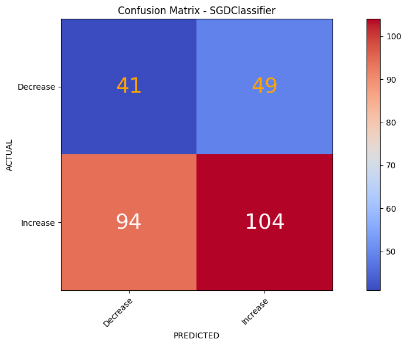
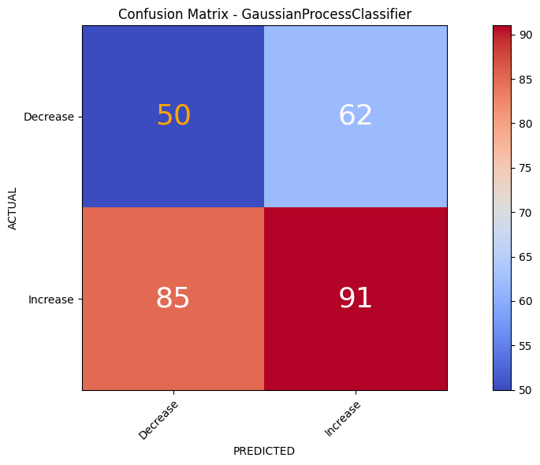
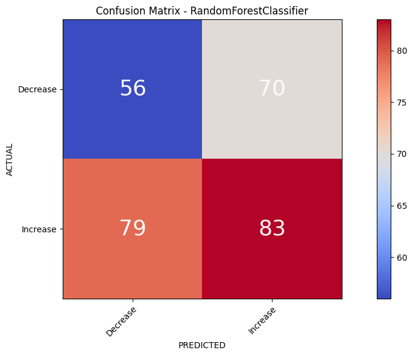
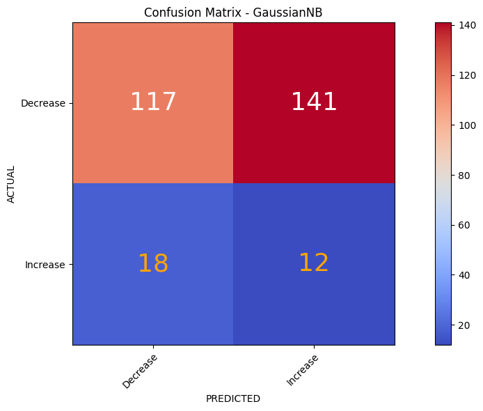
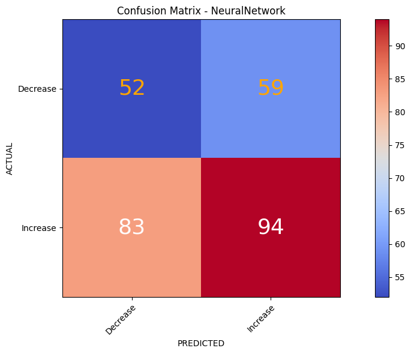

January 2024
This study aims to investigate the interplay between stock price prediction and news sentiment analysis using machine learning techniques. The study focuses on Reliance Industries, a prominent player in the Indian stock market, and aims to forecast its stock price movements based on sentiment analysis of financial news articles. The research utilizes historical stock price data and news articles collected from 2014-12-04 to 2024-01-12, employing machine learning models to analyze sentiment and predict daily stock price movements. Techniques such as Vader sentiment analysis and TextBlob polarity analysis are applied to gauge the sentiment of news articles, while models including Linear Discriminant Analysis, Support Vector Machine, and Random Forest Classifier are deployed for stock price prediction. The evaluation process involves cross-validation and performance metrics such as accuracy and precision scores. Insights drawn from the analysis contribute to understanding the effectiveness of machine learning models in predicting stock price movements based on news sentiment analysis.
The dynamic and often unpredictable nature of financial markets has long intrigued investors and researchers seeking to unravel the underlying forces driving stock price movements. In recent times, the rise of digital media and advanced data analysis methods has brought about a new way of analyzing markets. Now, the feelings and attitudes expressed in financial news articles are seen as important signals of how the market feels and how investors behave.
The prediction of stock market movements plays a pivotal role in aiding investors with informed decision-making processes, mitigating risks, and optimizing investment strategies. Many evidence (Tetlock, 2007; W. Wang et al., 2013) suggests that news media exerts a significant influence on stock price behavior, making stock market predictions based on news mining an increasingly compelling area of research. However, this field poses formidable challenges due to the inherently unstructured nature of news data.
Sentiment analysis, which is a key part of examining news, helps understand people’s feelings and opinions about things like products, services, and events. A study (Pang et al., 2002) conducted sentiment analysis of movie reviews, revealing that machine learning techniques outperform simple counting methods in their findings. Another study (Kabbani & Usta, 2022) utilized financial articles spanning from January 1, 2016, to April 1, 2020, to forecast intraday stock trends. The outcome yielded a satisfactory test accuracy of 63.58%.
Every investment decision, regardless of its scale, carries the potential to profoundly influence a company’s growth trajectory. Positive investor sentiment can stimulate greater investment in a company, enhancing its growth outlook. Conversely, negative perceptions may lead investors to sell their shares, causing a decline in the company’s stock price. Therefore, comprehending and analyzing sentiment dynamics in financial markets is crucial for investors aiming to navigate investment landscapes effectively.
At the heart of our investigation lies Reliance Industries, a prominent entity in the Indian stock market landscape. Our study seeks to address several key objectives. Firstly, we aim to quantify and analyze the sentiment expressed within financial news articles related to Reliance Industries, drawing upon established sentiment analysis techniques such as the VADER sentiment analyzer and TextBlob polarity assessment. By harnessing the power of natural language processing algorithms, we endeavor to distill meaningful insights from the vast corpus of financial news data, discerning patterns and trends that may influence stock price movements. This research paper draws inspiration from prior studies (Nemes & Kiss, 2021; Xiao & Ihnaini, 2023) employing similar Natural Language Processing(NLP) algorithms for sentiment analysis in financial news.
Previous research (Khedr et al., 2017) based on Naïve Bayes and KNN algorithms has shown impressive accuracy scores. In addition to these algorithms, we have employed a diverse array of machine learning models, including Linear Discriminant Analysis, Support Vector Machine, and Random Forest Classifier, to predict daily stock price changes based on sentiment analysis of news articles.
In summary, this research endeavors to bridge the gap between theory and practice in the realm of financial analysis, unlocking new avenues for understanding market dynamics and enhancing predictive accuracy. Through empirical investigation and data-driven insights, the study aspires to empower stakeholders to navigate the complexities of the financial markets with confidence and foresight.
The data processing and analysis were conducted using Python programming language version 3.9 within the Microsoft Windows 10 operating system. Specifically, the programming language was facilitated by Google’s development environment and executed using Google Colaboratory, commonly referred to as Colab. Various libraries such as pandas, numpy, scikit-learn, and matplotlib were utilized for data preprocessing, analysis, modeling, and visualization tasks.
The study concentrated on analyzing stock market sentiment in India, with a specific focus on Reliance Industries, spanning from April 12, 2014, to December 1, 2024. The data collection process occurred in two phases. Initially, we compiled relevant news articles, followed by gathering the stock’s price history in the second phase.
Investing.com serves as one of the reliable news aggregators, offering articles from esteemed publishers like Benzinga India, The Economic Times, Times Of India, and Business Line, among others. This also helped in avoiding the bias of specific financial media. Another rationale for selecting Investing.com was its provision of both headlines and summaries of news articles, crucial data points for calculating market sentiment. Textual data sourced from https://in.investing.com/equities/reliance-industries-news, totaling over 8000 articles, was curated from 390 pages for data preprocessing. Python, along with the BeautifulSoup and requests modules, facilitated web crawling and data scraping from in.investing.com during the specified timeframe.1
| Ticker | Date | Title | Body Text | URL |
|---|---|---|---|---|
| RELIANCE.BO | 15/6/2022 | 20 Million Subscribers Lost… | Analysts at Media Partners Asia estimate that Walt Disney could see as many as 20 million Disney+ subscribers leave… | Link |
| RELIANCE.BO | 18/7/2022 | 4 bidders for 5G spectrum… | The four bidders for the 5G spectrum auction have paid their earnest money deposit with Reliance Jio Infocomm Ltd… | Link |
The Bombay Stock Exchange(BSE) price data for Reliance Industries was obtained using Yahoo Finance’s Python package, yfinance, which included attributes such as opening and closing prices, highs and lows, adjusted close values, and trading volumes.
| Date | Open | High | Low | Close | Adj Close | Volume |
|---|---|---|---|---|---|---|
| 2014-04-15 | 476.88 | 476.88 | 468.48 | 474.25 | 436.28 | 1,943,098 |
| 2014-04-16 | 470.10 | 479.50 | 469.10 | 470.52 | 432.85 | 451,072 |
In this supervised learning setup, our model needs labeled data to learn. But our dataset only has financial news, without clear signs of whether it’s positive or negative. So, before training our model, we have to tag each news article as positive or negative. We do this because positive news usually makes investors buy more stocks, while negative news often leads to selling. Sentiment analysis of financial news articles employs two distinct algorithms to compute sentiment scores. These algorithms comprise VADER from NLTK, which generates scores such as positive, negative, neutral, and compound, and TextBlob from NLP, which evaluates the subjectivity and polarity of financial articles.
VADER, a component of NLTK(short for Natural Language Toolkit), stands for Valence Aware Dictionary and sEntiment Reasoner. It is a lexicon and rule-based sentiment analysis tool designed specifically for analyzing social media texts. VADER is known for its ability to handle sentiment analysis tasks, providing sentiment scores for text inputs by assessing the polarity (positive, negative, or neutral) and intensity (compound score) of sentiment expressed within the text.
We have used SentimentIntensityAnalyzer, a class within NLTK’s VADER module, that performs sentiment analysis using lexicon and rule-based methods. It is capable of analyzing sentiment in text data by assigning polarity scores and a compound score to each article text, thereby quantifying the sentiment expressed in the article on a numerical scale.
TextBlob is a Python library known for its user-friendly interface and versatile text processing capabilities. It offers built-in functions for sentiment analysis, which assess the sentiment polarity and subjectivity of textual content. Sentiment polarity categorizes text as positive, negative, or neutral based on its emotional tone, while subjectivity measures the degree to which the text expresses opinions rather than factual information. TextBlob’s simplicity and pre-trained sentiment analysis model make it a convenient tool for analyzing sentiment in textual data within the realm of finance.
| Algorithm | Score | Range | Significance |
|---|---|---|---|
| VADER | Negative | [0,1] | The proportion of textual data that fall in the Negative category |
| Neutral | [0,1] | The proportion of textual data that fall in the Neutral category | |
| Positive | [0,1] | The proportion of textual data that fall in the positive category | |
| Compound | [-1,1] | Calculates the sum of all lexicon ratings which have been normalized between [-1,1] | |
| TextBlob | Subjectivity | [0,1] | Subjectivity tells us the extent to which a statement is subjective or objective where 0.0 represents very objective and 1.0 represents highly subjective. The higher subjectivity means text contains personal opinions rather than factual information. |
| Polarity | [-1,1] | Calculates the sentiment of a statement where -1 represents a negative statement and +1 is a positive statement |
Table adapted from Maqbool et al. (2022).
Prior to analyzing the news articles, the dataset underwent essential cleaning procedures. Initially, entries lacking a publish date were removed. Duplicate news headlines were eliminated, ensuring only one instance remained. The news articles were then chronologically organized based on their publication dates. Articles published on the same day were kept, and duplicate dates were removed to streamline the dataset. Subsequently, a verification process confirmed the reduction in the number of articles. Date formatting was standardized to facilitate analysis. The news dataset was merged with the stock data, utilizing dates for alignment. A designated list was created to accommodate cleaned news articles, subsequently integrated into the dataset. Finally, subjectivity and polarity metrics were computed for each news article and appended to the dataset for further analysis.
After computing subjectivity and polarity metrics, the reliance stock information was integrated into the data frame. A new column titled ‘Label’ was introduced, assigned a value of “1” when the RELIANCE.BO Adj Close value either increased or remained constant the following day and “0” when the RELIANCE.BO Adj Close value decreased. Later, the ‘Label’ column was merged with the stock DataFrame. The next day’s Adjusted Close price and Label were then consolidated with the combined stock data and news sentiment DataFrame. Finally, the dataset was condensed to retain relevant columns including stock price and sentiment scores.
| Date | Label | Open | High | Low | Close | Adj Close | Volume |
|---|---|---|---|---|---|---|---|
| 29-10-2014 | 1 | 469 | 476.2 | 467 | 475.65 | 445.61 | 679,952 |
| 06-01-2015 | 1 | 436 | 436 | 416.1 | 418.05 | 391.64 | 1,950,844 |
| Date | neg | neu | pos | compound | subjectivity |
|---|---|---|---|---|---|
| 29-10-2014 | 0.007 | 0.921 | 0.072 | 0.989 | 0.332 |
| 06-01-2015 | 0.002 | 0.919 | 0.079 | 0.994 | 0.324 |
The feature matrix (X) comprised various attributes, including ‘Open’, ‘High’, ‘Low’, ‘Close’, ‘Adj Close’, ‘Volume’, ‘subjectivity’, ‘polarity’, ‘compound’, ‘neg’, ‘neu’, and ‘pos’. These features incorporated a diverse range of financial and sentiment-related metrics, providing thorough information for our predictive models to learn from. The target variable (y), denoted as ‘Label’, represented the binary classification task of predicting whether the RELIANCE.BO stock price would increase or decrease on the following day.
Following feature selection, we partitioned our dataset into training and testing sets. Splitting time series data randomly isn’t feasible due to the risk of introducing look-ahead bias. Thus, the initial 80% of the data served as the training set, while the remaining 20% formed the test set.
To ensure the robustness of our models, we standardized the feature matrix (X_train and X_test) using standard scaling techniques. Standardization transformed the features to have a mean of 0 and a standard deviation of 1, preventing certain features from dominating the model training process due to differences in their scales. All of these preprocessing steps were conducted before deploying various machine-learning models on the dataset.
In prior research, Naive Bayes and KNN Classifiers have demonstrated favorable outcomes (Khedr et al., 2017). However, this study takes a methodical and evaluative approach to pinpoint the most appropriate model for the dataset. It explores various established machine learning models, including Linear Discriminant Analysis, Support Vector Machine Classification, Stochastic Gradient Descent Classifier, K-Nearest Neighbors Classifier, Gaussian Process Classifier, Random Forest Classifier, Gaussian Naive Bayes, and Neural Network. Through systematic training and testing on each of these models, the study aims to pinpoint the model(s) with the highest average accuracy, thus offering insights into the optimal method for predicting Reliance Industries stock price movements based on sentiment analysis of market news.
LDA is a discriminative analysis method that seeks the optimal linear combination of features to separate classes. It operates under the assumption of Gaussian distributions and equal covariance matrices across classes, making it efficient for high-dimensional datasets with well-separated classes. The model was trained on the training data (X_train, y_train) using the fit() method.
SVM is a powerful classification technique that identifies the optimal hyperplane to maximize the margin between classes in high-dimensional spaces. It accommodates both linear and non-linear classification tasks through the use of various kernel functions, rendering it adaptable to diverse datasets.
SGDClassifier is a linear classifier that iteratively updates its parameters using stochastic gradient descent. It is particularly well-suited for large-scale classification tasks and is capable of handling sparse data efficiently, making it a useful choice for this classification task.
KNN is a non-parametric method that makes predictions based on the majority class of its nearest neighbors in the feature space. Its simplicity and intuitive nature make it suitable for a wide range of classification tasks, although its performance may be affected by the choice of distance metric and number of neighbors. The KNeighborsClassifier class from scikit-learn was used with 10 neighbors.
GPC is a probabilistic classification model that leverages Gaussian processes to model the underlying distribution of the data. It provides uncertainty estimates for predictions, making it valuable for tasks where robust uncertainty quantification is crucial.
Random Forest is an ensemble learning method that constructs multiple decision trees trained on different subsets of the data and combines their predictions. It mitigates overfitting and is robust to noise and outliers, making it well-suited for high-dimensional datasets with complex relationships. RF was trained on 100 decision trees on the training data.
GaussianNB is a simple probabilistic classifier based on Bayes’ theorem and the assumption of feature independence. Despite its simplicity and the ‘naive’ assumption of feature independence, Gaussian Naive Bayes often perform well in practice, especially for text classification and other tasks with high-dimensional feature spaces.
MLPClassifier is a feedforward neural network that learns complex non-linear relationships between features and labels through multiple layers of nodes. It offers flexibility in modeling complex patterns in the data but requires substantial computational resources and data for training. During training, the model adjusts its weights and biases based on the input features and corresponding target labels to minimize the error.
We will leverage the Confusion Matrix to evaluate the effectiveness of each model in predicting stock price movements. It is a tool that provides a concise summary of the model’s performance by illustrating the number of correct and incorrect predictions made for each class.
| Predicted Class | |||
|---|---|---|---|
| Positive | Negative | ||
| True Class | Positive | True positives (TP) | False negatives (FN) |
| Negative | False positives (FP) | True negatives (TN) | |
True Positive (TP): Instances correctly predicted as positive.
False Negative (FN): Instances incorrectly predicted as negative.
False Positive (FP): Instances incorrectly predicted as positive.
True Negative (TN): Instances correctly predicted as negative.
Each cell in the table represents the count of instances for a particular combination of actual and predicted classes.
Precision and accuracy are calculated using the values obtained from the confusion matrix.
Precision:
Precision is the ratio of true positive predictions to the total number of positive predictions made by the model. It measures the accuracy of positive predictions made by the model.
\text{Precision} = \frac{\text{TP}}{\text{TP} + \text{FP}}
Accuracy:
Accuracy is the ratio of correct predictions (both true positives and true negatives) to the total number of predictions made by the model. It measures the overall correctness of the predictions made by the model.
\text{Accuracy} = \frac{\text{TP} + \text{TN}}{\text{Total Predictions}}
| Model | Precision | Accuracy | |
|---|---|---|---|
| Decrease | Increase | ||
| LDA | 0.46 | 0.54 | 0.50 |
| SVM | 0.17 | 0.80 | 0.51 |
| SGD | 0.34 | 0.68 | 0.52 |
| KNN | 0.51 | 0.40 | 0.45 |
| GPC | 0.37 | 0.59 | 0.49 |
| Random Forest | 0.46 | 0.51 | 0.49 |
| GaussianNB | 0.87 | 0.08 | 0.45 |
| Neural Network | 0.45 | 0.58 | 0.52 |
Precision and accuracy scores serve as performance metrics. It’s crucial to highlight that this process is implemented across all models. During our assessment, Gaussian Naive Bayes (GaussianNB) and Support Vector Machine (SVM) Classification stood out among the pool of eight models considered. Notably, GaussianNB displayed exceptional precision in identifying ‘Decrease’ movements with a score of 0.87, while SVM Classification achieved an impressive precision of 0.80 for ‘Increase’ movements.
Furthermore, our examination identified Linear Discriminant Analysis (0.5357), GaussianNB (0.5296), and KNeighborsClassifier (0.5096) as the top three models based on cross-validation accuracy. This method assesses a model’s performance by dividing the dataset into 5 parts, training on 4, and validating on 1, repeated 5 times. The average accuracy score is determined to evaluate how effective the model is and to understand its ability to generalize.
Although the models exhibited promising results during cross-validation, their actual predictive performance did not meet our expectations. Accuracy scores from Table 7 suggest that the model’s predictive performance is only marginally better than random chance. Despite the impressive precision observed with GaussianNB and SVM Classification, the overall effectiveness of the models in making accurate predictions did not meet our desired standards.
In our investigation into the symbiotic relationship between news sentiment analysis and stock price movement forecasting using machine learning, we uncovered insights that shed light on both the potential and challenges in this domain. While our study yielded valuable findings, there remain opportunities for refinement and expansion in future research endeavors. Our analysis revealed that certain machine learning models, notably Gaussian Naive Bayes and Support Vector Machine Classification, displayed promising precision in predicting stock price movements. However, the overall accuracy of these models did not consistently meet desired standards, indicating areas for improvement.
Moving forward, several avenues for future work emerge. Firstly, enhancing the accuracy of sentiment analysis techniques by integrating more sophisticated models, such as BERT or Transformer-based architectures, could yield more nuanced insights from financial news articles. Additionally, exploring alternative data sources beyond traditional financial news, such as sentiment from social media or macroeconomic indicators, may provide a more comprehensive understanding of market sentiment.
Furthermore, leveraging ensemble methods or deep learning architectures could offer improved predictive capabilities by capturing complex, nonlinear relationships in the data. Rigorous backtesting and sensitivity analyses will be essential to validate the robustness of the models and refine their parameters for enhanced performance. Expanding the scope of the study to include a broader range of stocks and market conditions will provide deeper insights into the dynamics between news sentiment and stock price movements across various sectors and market environments. This broader perspective will enable researchers to develop more robust models that can adapt to diverse market conditions and enhance decision-making processes in finance.
In summary, while our study has laid a foundation for understanding the interplay between news sentiment analysis and stock price forecasting, there remains ample room for innovation and refinement. By embracing these opportunities and addressing the challenges identified, future research can advance our understanding of market dynamics and contribute to the development of more effective predictive models in the realm of finance.
Note: The dataset was extracted from in.investing.com on 09-02-2024.↩︎